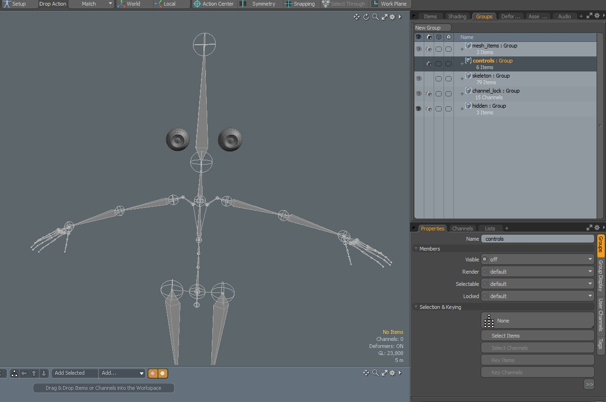
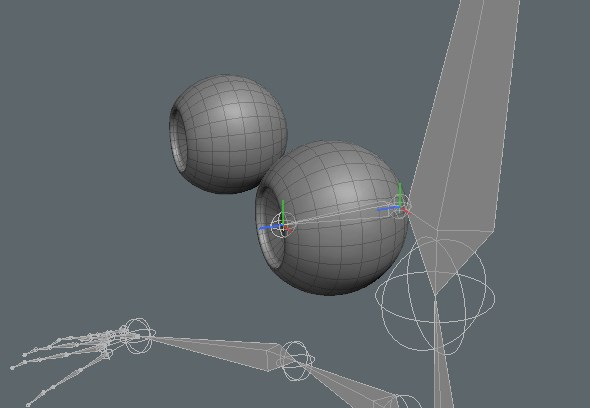
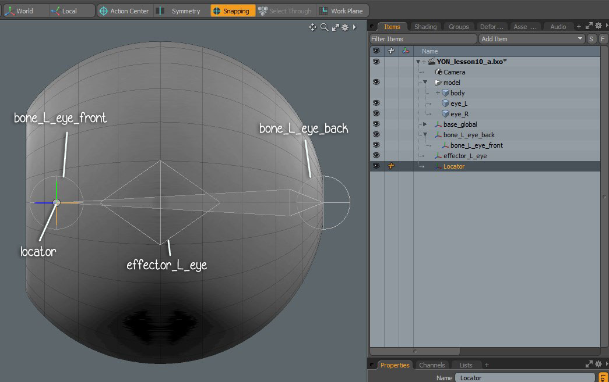
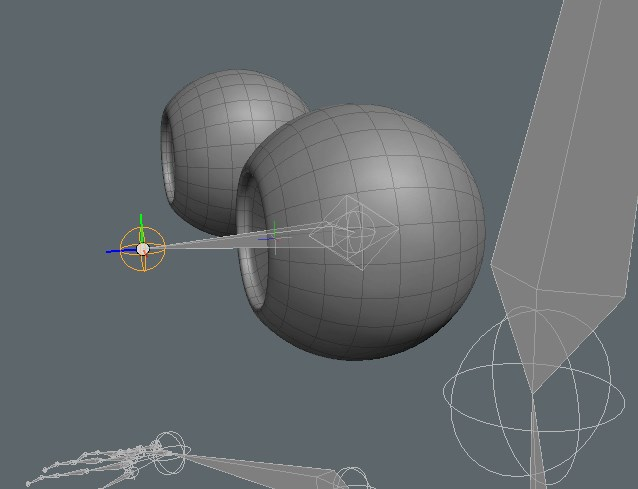
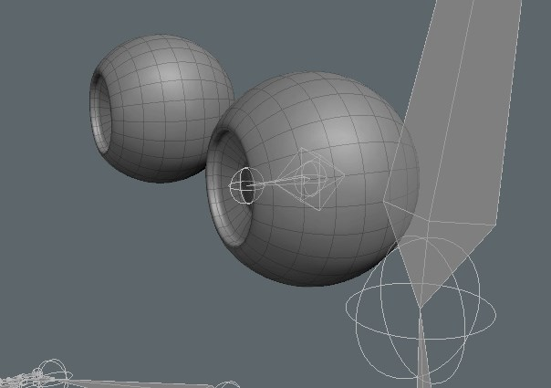
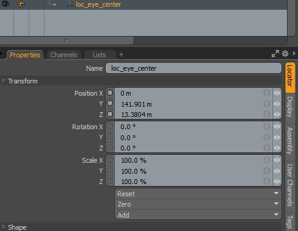
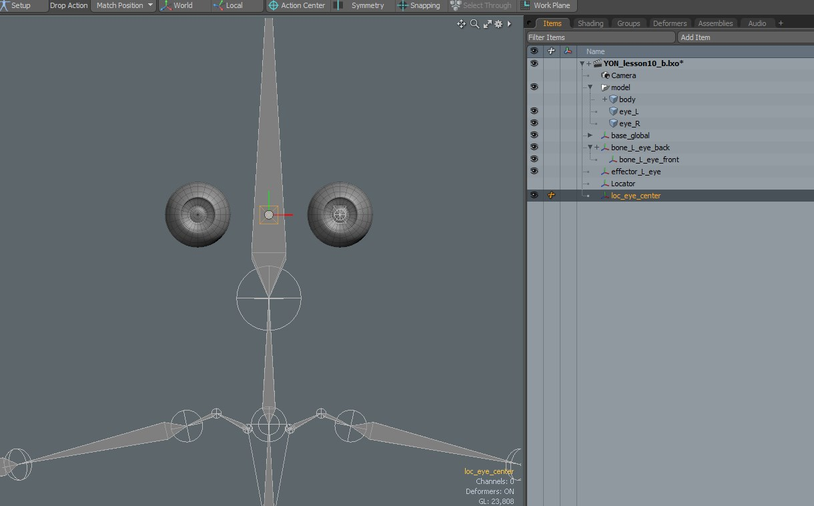
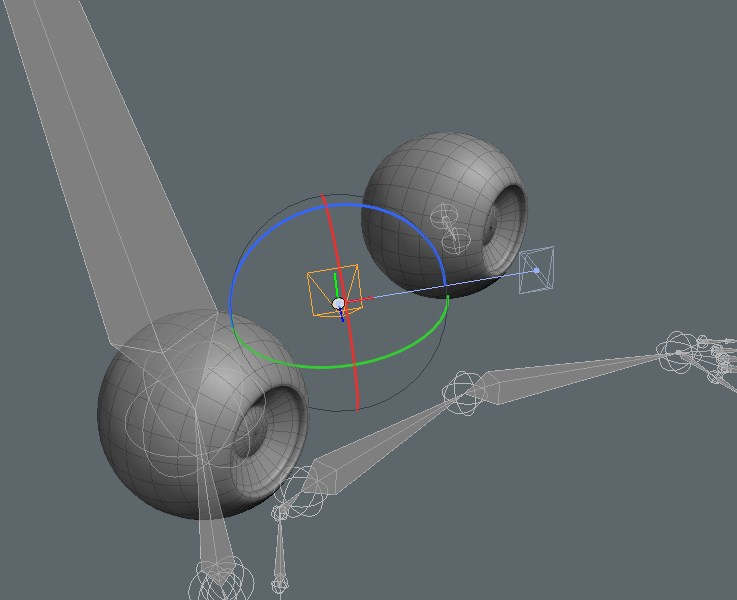
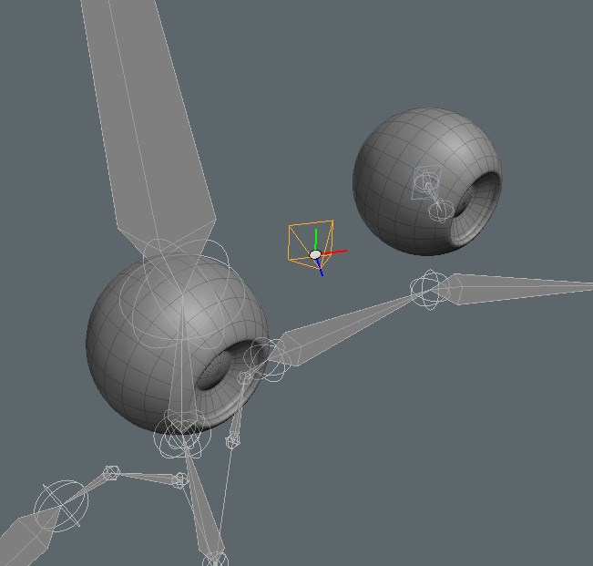
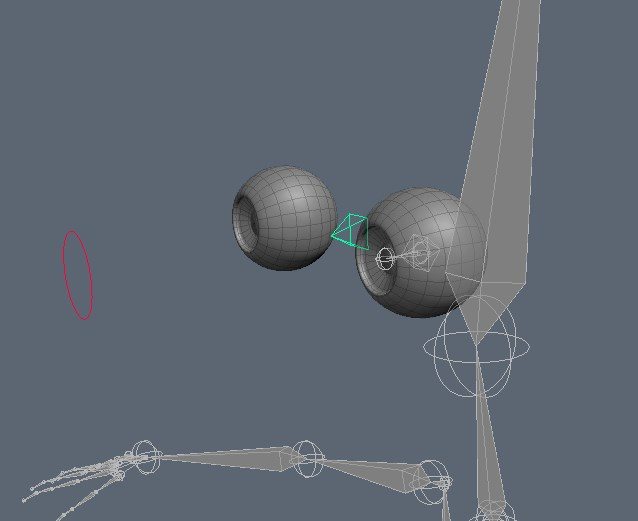

Notebook Lesson 13
- Yonseo Rigging Kit for Modo
- Projectfiles:
- project/YON_lesson13.lxo
- project/YON_lesson13_final.lxo
Eye Controls
The Eye Control
Let's start making the eye control. I turned off the controls and the body mesh. Now all I can see is the skeleton and eyes. - 1) First let's lets turn on snapping and make sure vertex option is checked.
Activate the skeleton tool and starting from the back of the eyeball I will create a bone by clicking on the center. Then I will rotate my view to the front of the eyeball
and click on the center. This will create a bone in the center of the eyeball.
Rename your bone joints to 'eye_L_front' and 'eye_L_back'.

Press 'L' on your keyboard to create a locator and change your [Drop Action: Position]. Perform a drop action on the eye bone to quickly position it on the eye.
Enter your right view and move it to the center. With snapping [vertex] enabled it will snap to the center vertex. Rename this to 'effector_L_eye' and change its shape to a rhombus.

Create another Locator and [Drop Action: [Position] to 'bone_L_eye_front'. This is a temporary locator we will delete later but for now we will hold on to it so I can use it
on the right side of the eye.
Finally select your eye bone and [Drop Action: Match] perform a drop action to 'effector_L_eye'.

This will move our eye bone to the center of the eye and move the 'eye_L_front' joint outside of our eyeball mesh.
With the temporary locator in our scene we can perform a drop action and fix this problem.

[Enter Setup] select the eye bone and ctrl+select the 'effector_L_eye'. Add modifier [Rotation]. Exit Setup and test rotation of 'effector_L_eye'.

Create a new locator and name this 'loc_eye_center'. [Drop Action: Position] perform a drop action to 'effector_L_eye'.
Under transformations change Position X to 0. I want this locator to be at the center of both eyes.

[Enter Setup] and select 'effector_L_eye' then ctrl+select 'loc_eye_center'. Assign a modifier [Rotation].
Parent 'effector_L_eye' to 'loc_eye_center'. Select all the eye objects created in this lesson and [Zero > All].
[Exit Setup] and test rotation of 'loc_eye_center'.

The bone follows the 'loc_eye_main' which is fine but the 'effector_L_eye' does not stay in place.
Let's fix this by selecting 'effector_L_eye' and ctrl+selecting 'bone_L_eye_back' and parent to the bone.

Now our 'effector_L_eye' stays in place and the eye bone follows when we rotate 'loc_eye_center'.
We haven't added a controller for the eye control so lets do that.

Create a locator and change its shape to a circle. Rename it to 'controller_eyes'. Perform a [Drop Action: Position] to 'loc_eye_center'.
Then move the circle foward.
- 2) [Enter Setup] then select the 'loc_eye_center' and ctrl+select 'controller_eyes'. Add a modifier [Direction].
3)
Last Steps.- 1) [Enter Setup]
Select the eye bone and parent to the head bone.
- 2)
Enable the controls group to make them visible.
Perent the 'loc_eye_center' to 'controller_goal_head'.
Parent the 'controller_eyes' to 'controller_goal_head'.
- 3)Bind the eyeball to the eye bone. Use [Heat].

In the next lesson I will cover problem solving.